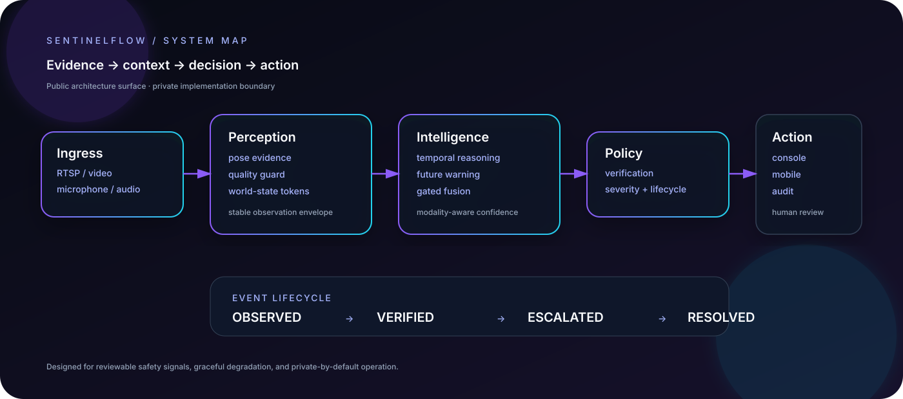
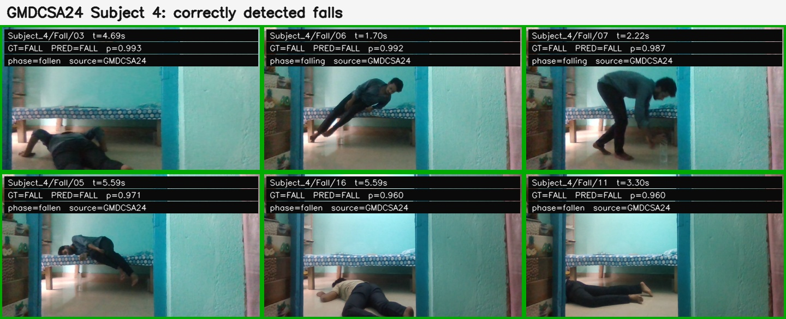
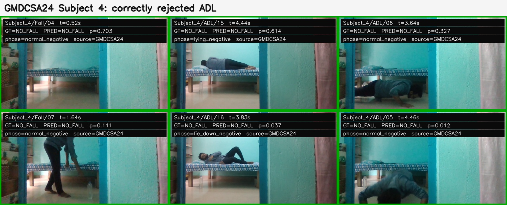
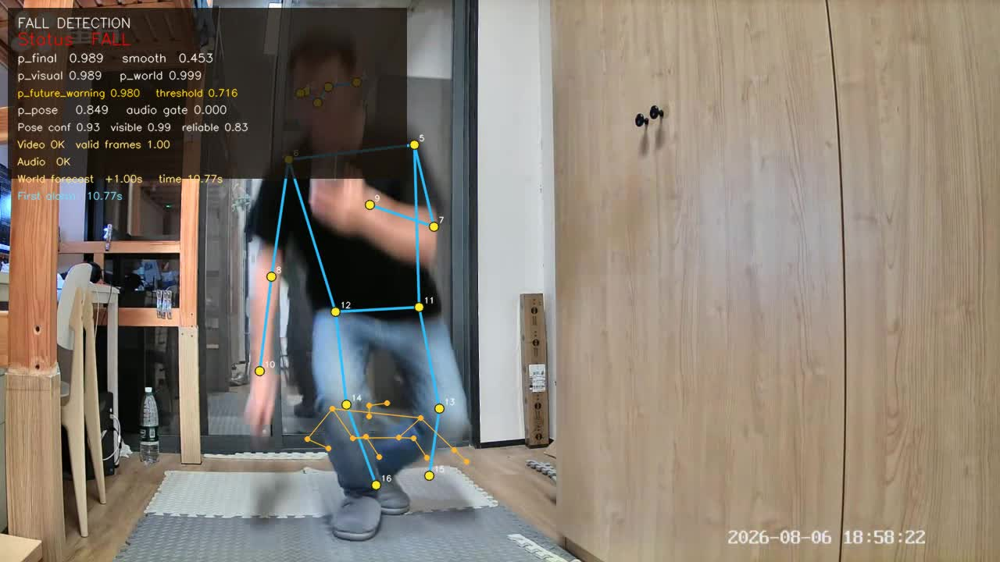
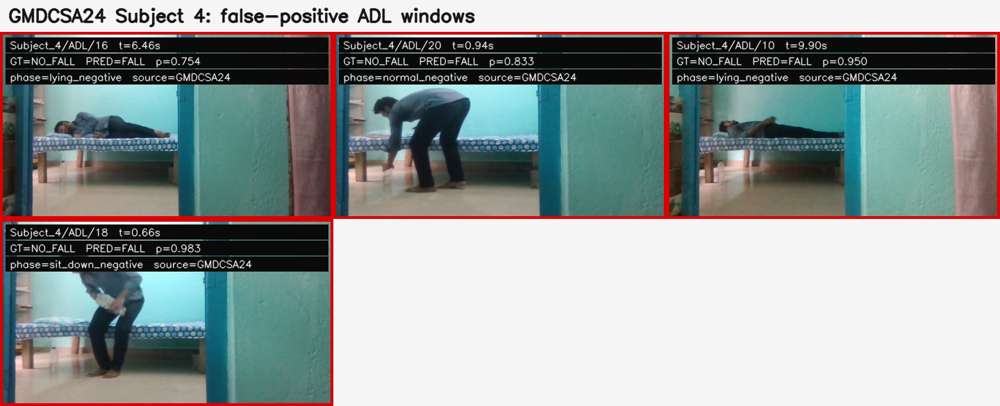
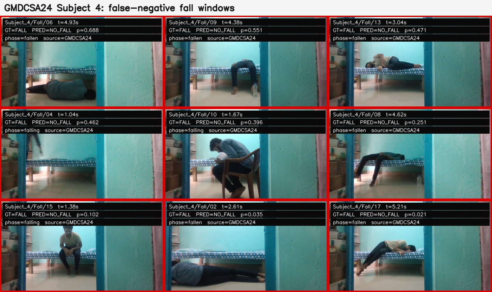

MULTIMODAL HUMAN-SAFETY INTELLIGENCE
Evidence that
earns attention.
A private, production-oriented research platform that turns video, pose, temporal context, and optional audio into reviewable safety events.

VISUAL AUDIT
See the signal.
See the miss.





THE THESIS
Models observe.
Policy protects.
SentinelFlow separates perception from action. A detector can produce an observation; only the policy layer can create an operator-visible event. That separation makes confidence, degradation, acknowledgement, and audit explicit.
The public release exposes the system vocabulary and integration boundary while keeping private implementation, weights, and data outside the repository.